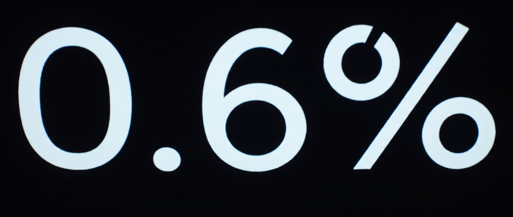
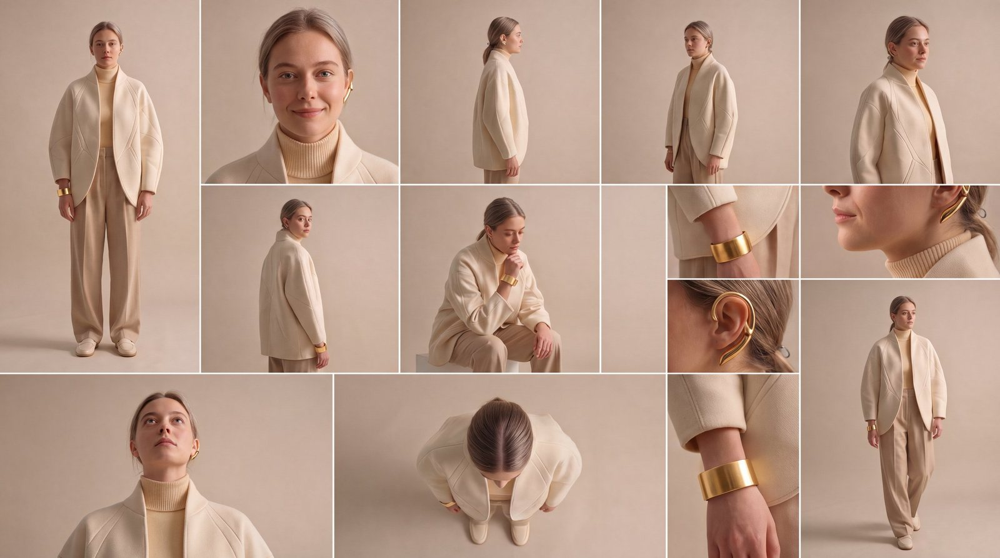
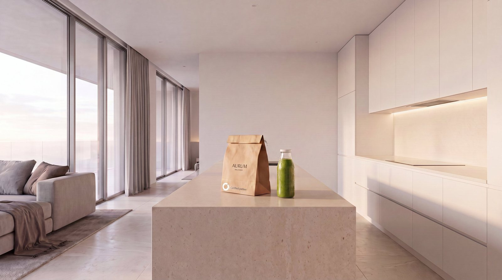
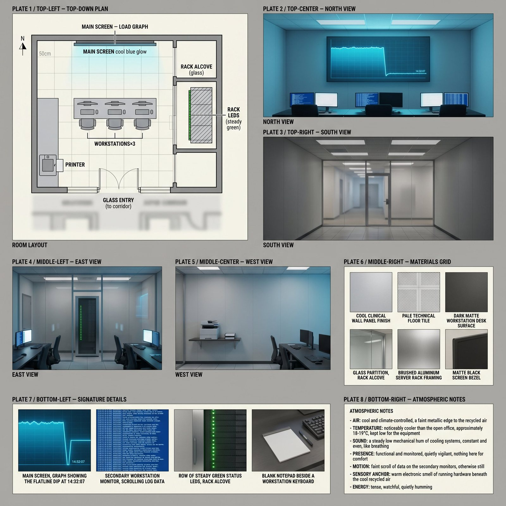

0.6%
IN PRODUCTION
Three people discover in one day that free will isn't where they thought it was.
SCENE 0 - THE COMMERCIAL
The film opens on an advertisement. Before you meet anyone, you meet the product they already live inside. This is that commercial, in full.
THE WORLD
A near-future where the system knows your body better than you do: a band on the wrist, a node behind the ear, a city that listens. None of it is framed as dystopia. It is framed as convenience.
STILLS & cards


